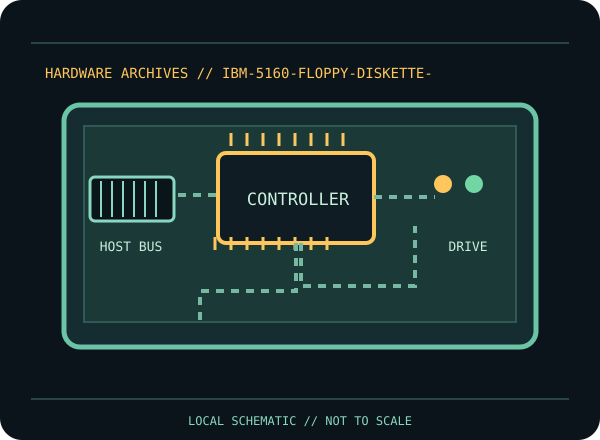

[ INDIVIDUAL COMPONENT // FLOPPY DRIVES ]
IBM PC/XT Diskette Controller (5160)
This record identifies a documented physical floppy drive, controller, or preservation interface. It separates confirmed model facts from details that vary by suffix, board revision, host, media and configuration.

IDENTIFICATION NOTE: Match the full model/part number, revision, connector and manual before use. Similar family names do not establish interchangeable mechanics or host compatibility.
Model specifications
| Catalog subcategory | Floppy controller cards |
|---|---|
| Exact model / family | IBM PC/XT 5160 Diskette Controller |
| Era / product family | IBM Personal Computer XT 5160 diskette subsystem |
| Documented characteristics | IBM PC/XT controller design documented in the 5160 technical reference. The board-level implementation and installed drive options vary by machine revision; this entry refers to the controller subsystem, not a standalone drive or a later enhanced controller. |
| Interface / connectors | IBM PC/XT controller connects to its system bus and the documented floppy-drive cable/drive signals. Consult the PC/XT technical reference for specific pin and configuration details; it is not USB and does not directly support every non-PC disk format. |
| Host and media compatibility | Documented for the IBM PC/XT architecture and compatible diskette mechanisms supported by the machine configuration. Host BIOS/DOS and controller behavior limit formats; flux-level preservation of unusual formats requires a separate compatible capture interface. |
Model-specific compatibility checks
- Identify the complete model/suffix, board revision, serial/date codes and connector arrangement from the physical unit; photograph all labels before installation.
- Documented for the IBM PC/XT architecture and compatible diskette mechanisms supported by the machine configuration. Host BIOS/DOS and controller behavior limit formats; flux-level preservation of unusual formats requires a separate compatible capture interface.
- Confirm the host controller, drive wiring, power, drive select, termination, media density and recording format against the cited model documentation. Do not infer a fit or capacity solely from the drive size or connector shape.
Preservation and service notes
Before service, record card/system-board identity, BIOS revision, drive type, cable twist/select and termination. Use the machine service manual for alignment and diagnostics and test on expendable media. Do not infer host capacity or model support from a diskette-size match alone.
Keep original media and raw captures intact. Log the exact drive/controller/software configuration, acquisition date, condition and any service performed; checksum verified copies before creating derivatives.
Manufacturer documentation & sources
- IBM — PC/XT Technical Reference (April 1983)IBM technical reference covering the PC/XT diskette subsystem and controller architecture.
Sources are model-specific manufacturer documentation or archival copies of the original source. Where a document covers a family or multiple revisions, confirm its applicability to the exact unit before using an electrical or service specification.